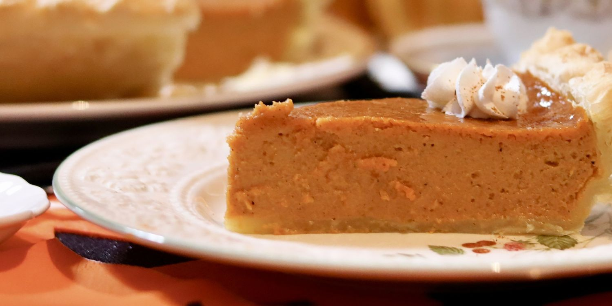

Pumpkin Pie

Description
Pumpkin pie is a classic dessert that embodies the flavors of autumn. Made with a rich and creamy filling, it's a delightful treat for any occasion. To create this delectable pie, you'll need a can of pumpkin puree, a can of Eagle Brand Sweetened Condensed Milk, two large eggs, ground cinnamon, ground ginger, ground nutmeg, salt, and a 9-inch unbaked pie crust.
The combination of these ingredients results in a smooth, spiced filling that is then baked to perfection in the pie crust. Once cooled, the pie is ready to be enjoyed, offering a taste of warmth and comfort with every bite.
Ingredients
- 1 (15 ounce) can pumpkin puree
- 1 (14 ounce) can Condensed Milk
- 2 large eggs
- 1 teaspoon ground cinnamon
- 1/2 teaspoon ground ginger
- 1/2 teaspoon ground nutmeg
- 1/2 teaspoon salt
- 1 (9 inch) unbaked pie crust
Steps
- Gather all ingredients and preheat the oven to 425 degrees F (220 degrees C).
- Whisk pumpkin puree, condensed milk, eggs, cinnamon, ginger, nutmeg, and salt together in a medium bowl until smooth.
- Pour into crust.
- Bake in the preheated oven for 15 minutes.
- Reduce oven temperature to 350 degrees F (175 degrees C) and continue baking until a knife inserted 1 inch from the crust comes out clean, 35 to 40 minutes. Let cool before serving.
- Enjoy!
Go back to main menu.